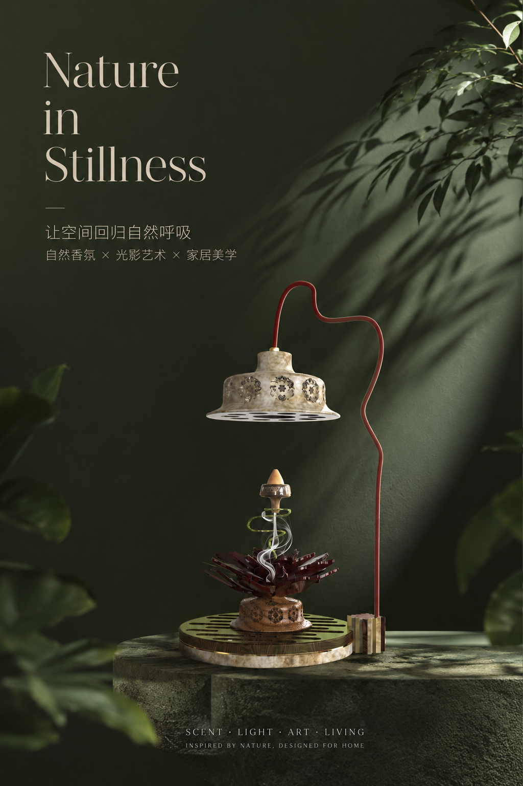
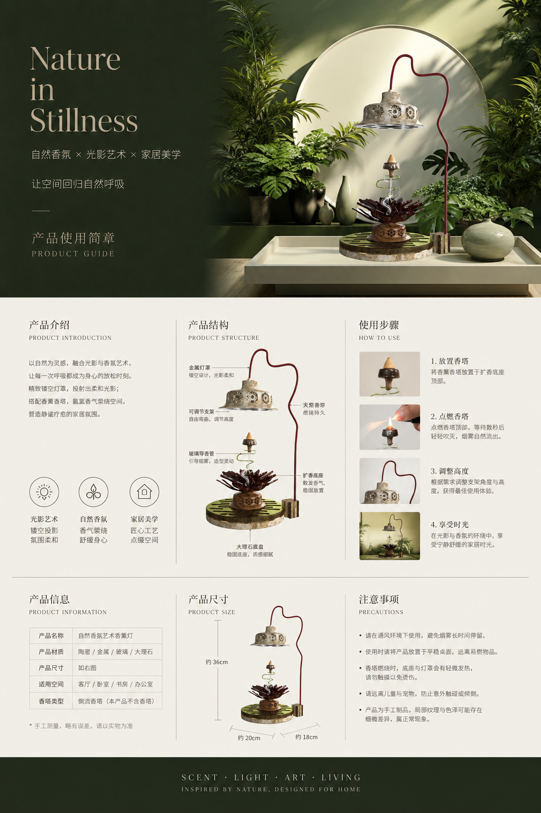
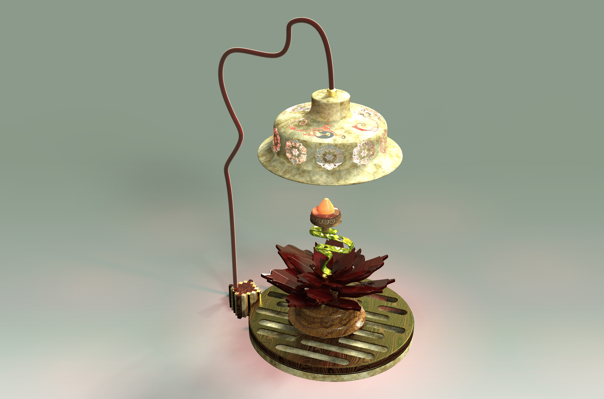
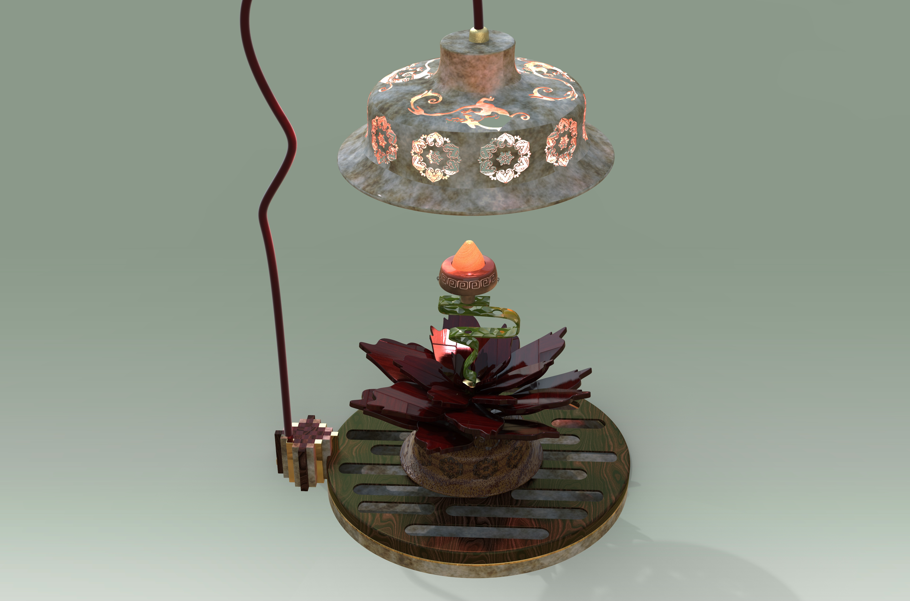
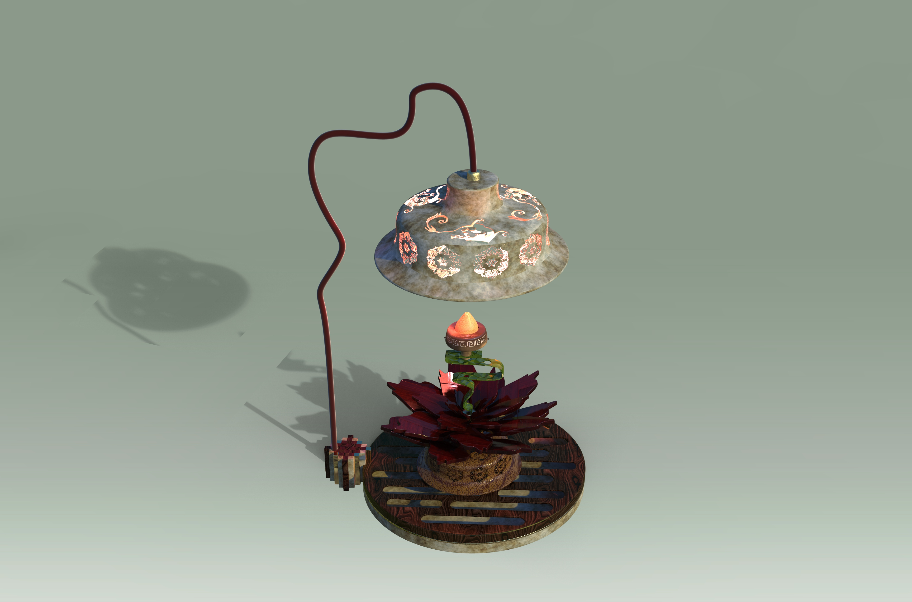

借助倒流烟雾的缓慢运动，建立舒缓、安静的使用节奏。
产品设计 / 家居香氛 / 2026
自然之声Nature in Stillness
以倒流香的烟雾轨迹为核心，将自然香氛、光影艺术与家居美学融合为一件具有东方气韵的桌面装置。
倒流香装置
光影氛围
东方纹样
家居美学

01 / Design idea
让烟雾成为可观看的自然
装置以莲花承接香塔，利用螺旋导流结构强化倒流烟雾的路径；顶部灯罩提供柔和照明，使烟雾、纹样与投影共同形成安静的室内景观。
镂空灯罩投射纹样，让产品在白天与夜晚呈现不同层次。
通过莲花、石材、金属与曲线支架，形成兼具传统感与装饰性的桌面陈设。
02 / Presentation
项目主视觉与产品说明
竖版海报用于传达产品气质，产品指南进一步说明结构、尺寸、使用步骤与适用空间。


03 / System
设计展开与信息整合
通过完整展示板梳理造型、材料、功能与视觉表现，使装置从概念呈现过渡到可理解的产品系统。

04 / Final renders
装置细节与多角度呈现
不同视角重点呈现灯罩纹样、曲线支架、螺旋导流结构以及莲花承香台之间的空间关系。


